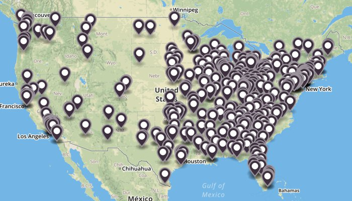

This is a map of the nearly 500 schools that reported zero sexual assaults occurred on their campuses between 2010 and 2012.

Were there actually zero? Or were they swept under the rug?
Think of all of the administrators, coaches, and players more concerned with protecting reputations.
Think of all of the long-running coverups that eventually came to light.
Think of all of the people punished, threatened, victim-blamed, and silenced for speaking out.
If the unthinkable happened to your loved one, would you want their school to take sexual assault seriously?
Or sweep it under the rug?
Here are a list of all of the schools that reported zero sexual assaults occurred between 2010 and 2012.
Use Control + F or ⌘ + F to bring up your browser's search box, then search for a school.